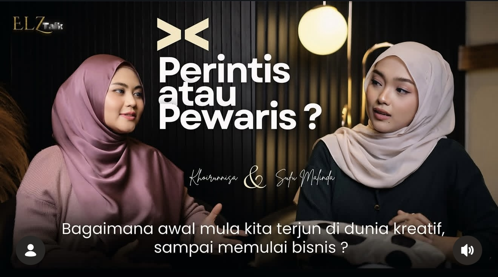
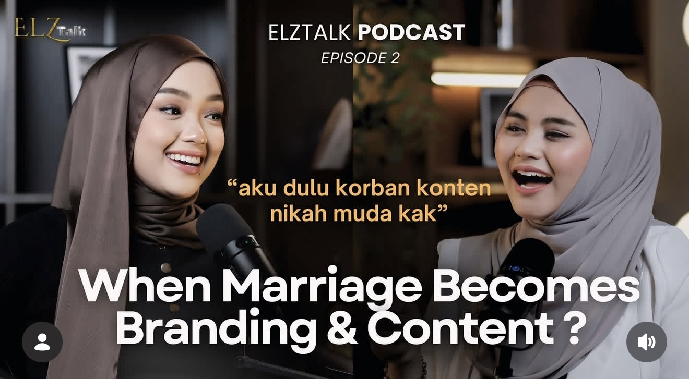
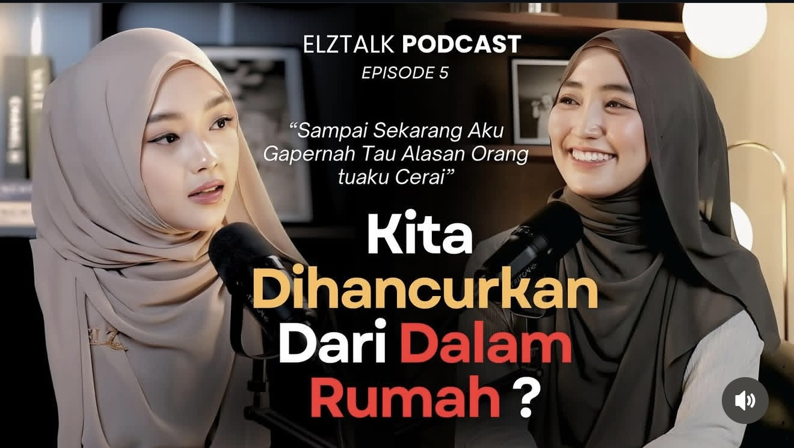

Podcast yang membahas seputar kehidupan, personal branding, relasi, dan inspirasi untuk perempuan masa kini — dibawakan oleh Sufu Malinda.
YouTube: Sufu MalindaSetiap episode menghadirkan percakapan yang jujur, mendalam, dan penuh makna seputar kehidupan, karier, dan pertumbuhan diri.
Bagaimana awal mula kita terjun di dunia kreatif sampai memulai bisnis? Percakapan inspiratif tentang perjalanan karier dan keberanian memulai dari nol.
Tonton di YouTube
Aku dulu korban konten nikah muda kak" — Membahas fenomena pernikahan yang dijadikan konten, batasan privasi, dan dampaknya bagi kehidupan nyata.
Tonton di YouTubeKuliah itu scam? Atau kita yang terlalu percaya branding bahwa kuliah pasti bikin sukses? Video ini bukan buat menjatuhkan pendidikan, tapi buat membuka ruang diskusi yang jarang dibahas. Karena hidup nggak selalu sesederhana ijazah dan gelar.
Tonton di YouTubeBanyak orang berpikir bahwa cantik bisa membuka semua pintu. Tapi benarkah begitu? Dalam episode ini kami membahas pengalaman tentang rasa insecure terhadap penampilan, pernah mencoba berbagai cara untuk terlihat lebih cantik.
Tonton di YouTube
"Sampai sekarang aku gak tahu kenapa alasan orang tuaku cerai..." — Percakapan jujur tentang keluarga, luka batin, dan bagaimana kita bangkit dari dalam.
Tonton di YouTubesetiap individu harus memiliki kesadaran diri untuk menjaga sikap, tutur kata, dan tindakan, baik di dunia nyata maupun di media sosial.
Tonton di YouTubeOnline now